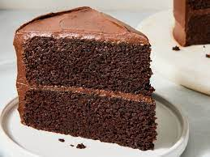

Chocolate Cake!

Description
Today we are going to be cooking the grandest cake you
have ever eaten before. Remember Mom trying
to make that chocolate Cake for your birthday? Yeah,
we all know how that one ended up (sorry mom). Today,
though, we will be righting the wrong by creating the
best chocolate cake known to man.
In order to make this cake properly you will need
certain ingredients, and a lot of love. We
cannot stress how important it is
that love is your number 1 ingredient today. If you
are sitting here and find yourself with a lot of love
today, then let's make ourselves the best chocolate Cake
ever!
ingredients
- Flour
- Sugar
- unsweet cocoa powder
- baking powder
- baking soda
- salt
- milk
- eggs
- vanilla extract
- LOTS OF LOVE
Steps!
- Preheat your oven to 350 farenheit.
- Add your flour, sugar, cocoa, baking
powder, and baking soda to a bowl and mix until
combined.
- Add all of your wet ingredients like milk, eggs
, and vanilla to that same bowl and mix again while
adding hot water to the bowl as well.
- Bake the mixture for about as long as you want
(ideally 30 minutes)
- remove from pan and you're all ready to
feast!
- If you enjoyed this recipe please leave your
feedback by emailing us @ theREALlordschicken@websitefaker.net
Return to homepage!